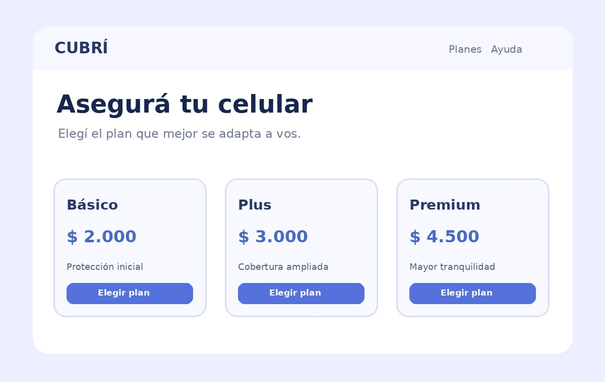
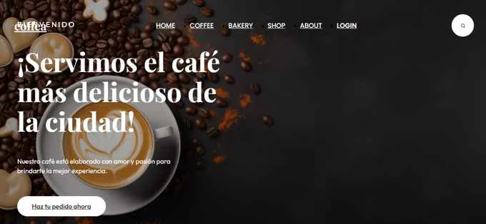
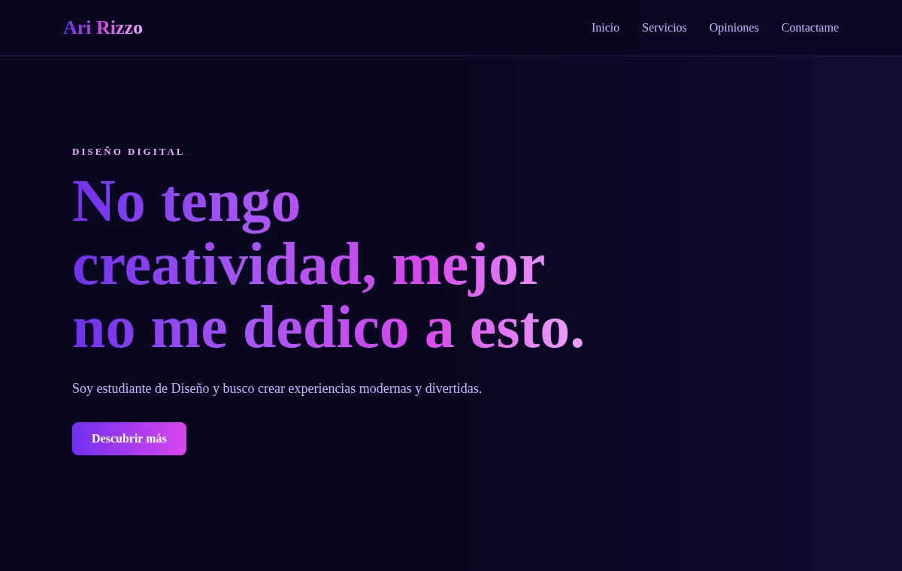
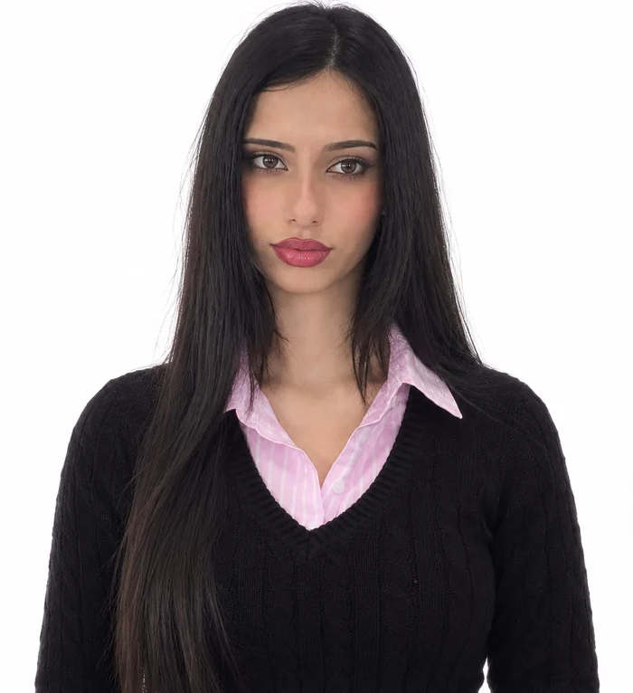

Años de formación
PORTFOLIO · DISEÑO DIGITAL
Diseñar ideas.
Crear experiencias.
Soy Ari Rizzo, estudiante de Diseño Digital. Me interesa crear experiencias modernas, intuitivas y con identidad propia.
Diseño digital · UX/UI · Desarrollo web
PENSAR.
DISEÑAR.
CREAR.
EN NÚMEROS
Mi recorrido en cifras.
Proyectos seleccionados
Años de experiencia
Portfolio personal
HABILIDADES
Ideas que toman forma.
Herramientas y conocimientos en desarrollo.
Programación
Resolución de problemas y pensamiento estructurado.
UX / UI
Interfaces y prototipos orientados a las personas.
Desarrollo web
Interfaces claras, semánticas y adaptables a cada pantalla.
Contenido
Comunicación y presentación de ideas digitales.
PROYECTOS DESTACADOS
Del concepto a la pantalla.
Una selección de trabajos de diseño, prototipado y desarrollo.

DISEÑO WEB · UX/UI
Cubrí Seguros
Prototipo de contratación de seguros para celulares y bicicletas, con cotización de planes, simulación de pagos y diseño responsive.
Ver proyecto ↗ (enlace pendiente)

DISEÑO WEB
Coffea Landing Page
Landing page para una cafetería, con un diseño moderno, atractivo y adaptable a diferentes dispositivos.
Ver proyecto ↗ (enlace pendiente)

DISEÑO WEB · UX/UI
Prácticas de página
Página web de diseño digital con estética oscura, degradados violetas, tarjetas de servicios, testimonios y formulario de contacto.
Ver proyecto ↗ (enlace pendiente)
MI RECORRIDO
Aprender, crear
y evolucionar.
Estudios y formación que acompañan el desarrollo de mis proyectos.
2026 · FORMACIÓN
Diseño Digital
Escuela Da Vinci (Buenos Aires)
Exploración de interfaces digitales y comunicación visual.
2024 – ACTUALIDAD
Ingeniería en Sistemas de Información
Facultad de Ciencia y Tecnología (UADER)
Formación en programación y desarrollo de soluciones tecnológicas.

SOBRE MÍ
Curiosidad para explorar.
Ideas para crear.
Me interesa experimentar con el diseño y transformar ideas en experiencias visuales. Combino el pensamiento lógico con la creatividad para crear propuestas claras, modernas y funcionales.
Disfruto seguir aprendiendo nuevas herramientas y poner en práctica los conocimientos adquiridos en mis proyectos académicos.
Creatividad
Buscar soluciones visuales con identidad propia.
Claridad
Priorizar una experiencia simple de entender.
Empatía
Diseñar pensando en las personas.
CONTACTO
¿Creamos algo
que tenga sentido?
¿Tenés una idea o una oportunidad? Conversemos.